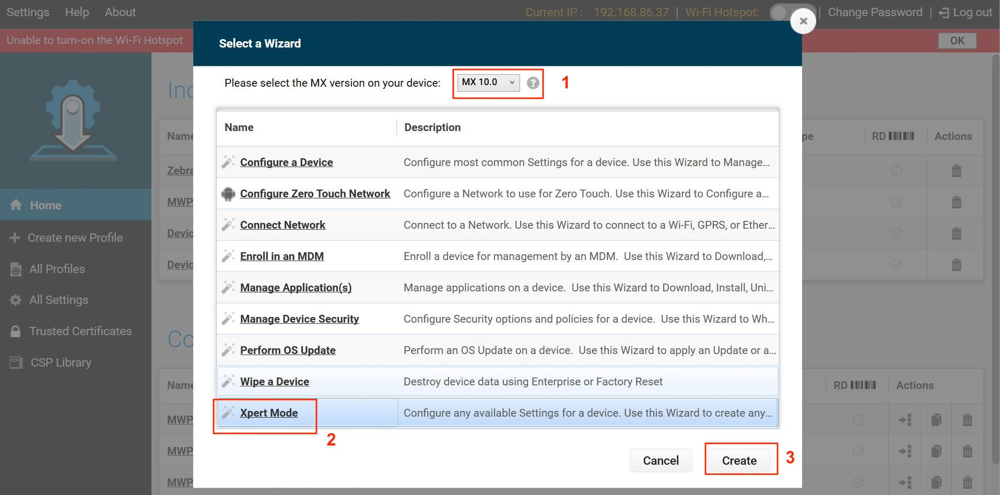

Overview
This guide discusses the APIs offered by Identity Guardian. Identity Guardian implements a content provider interface to securely retrieve and share data between applications. The content provider URI contains four distinct parts: <Scheme:>//<Authority>/<API>/<data>
- Scheme - The identifier that informs Android that the URI provides access to a content source. This is typically:
content:// - Authority - The authority name, typically in the forma
packagename.provider. - API - Th path that differentiates the content data.
- Data - The key name which points to data in the path.
Example of content provider URI: content://com.zebra.mdna.els.provider/<API>/<data>
<API> and <data> are replaced with the appropriate string.
Requirements
In the AndroidManifest.xml of your application, add the required permission and the
<queries>tag, which defines the package name for Identity Guardian:<uses-permission android:name="com.zebra.mdna.els.permission.PROVIDER" /> <queries> <package android:name="com.zebra.mdna.els" /> </queries>To use Identity Guardian APIs, they need to be allowlisted within your application.
For security purposes, your app must be included on Identity Guardian's permitted app allowlist using AccessMgr CSP from Zebra Device Manager (ZDM) to enable utilization of the APIs. Create a profile using StageNow to deploy the configuration to allowlist your app. Set the following parameters:
- Operation Mode: "Single User without Whitelist"
- Service Access Action: "Allow Caller to Call Service"
- Service Identifier: <delegation scope of the API category>
- Specify Caller Package Name: <enter app package name, e.g.: com.company.appname>
- Caller Signature: <select signature file that contains the app certificate>
See Caller Signature in the Access Mgr CSP documentation for information on generating a signature file. After creating the StageNow profile, use StageNow to scan the barcode generated or deploy the XML file via Enterprise Mobility Management (EMM) software.
Register for Notifications
Lock Screen Status
Register to receive notifications about the locked/unlocked status of Identity Guardian during user sign in/out events. Register this API in onCreate() and unregister it in onDestroy() method.
URI: content://com.zebra.mdna.els.provider/lockscreenstatus/state
Sample code:
Uri URI_CURRENT_LOCKSCREEN_STATE = Uri.parse("content://com.zebra.mdna.els.provider/lockscreenstatus/state");
cr.registerContentObserver(URI_CURRENT_LOCKSCREEN_STATE, false, contentObserverLockScreenState);
contentObserverLockScreenState = new ContentObserver(new Handler(getMainLooper())) {
@Override
public void onChange(boolean selfChange, Uri uri) {
super.onChange(selfChange, uri);
Log.d(TAG, "content has changed, uri = " + uri);
new Thread(new Runnable() {
@Override
public void run() {
getCurrentLockScreenStateOfDevice();
}
}).start();
}
};
The return value is in JSON string format:
{state: “SHOWN” or “HIDDEN”, lastchangedtimestamp:”MM:DD:YY HH:MM:SS”}
- "HIDDEN" indicates that the device is unlocked and a user is currently logged in.
- "SHOWN" indicates that the device is locked and no user is logged in.
Retrieve User Session
Retrieve session data associated with the current or previous user. When the device is in a locked state, these APIs are functional if the lock state is activated by specific device system events, not by an application triggering the lock state. The lock screen can be activated by the following device system events, based on Authentication Configuration:
- Unlocking the device (OnUnlock)
- Rebooting the device (OnReboot)
- Connecting the device to AC power (OnACPowerConnected)
- Disconnecting the device from AC power (OnACPowerDisconnected)
An application can activate the lock screen by invoking Start Authentication.
Current Session
Retrieve session data for the current user, including but not limited to: user ID, role, timestamps for sign in/out and multifactor authentication.
URI: content://com.zebra.mdna.els.provider/currentsession
General Sample code:
Uri URI_USER_CURRENT_SESSION = Uri.parse("content://com.zebra.mdna.els.provider/currentsession");
Cursor cursor = cr.query(URI_USER_CURRENT_SESSION, null, null, null, null);
Sample code for using Proxy Mode to send sign-in and sign-out notifications to Identity Guardian:
public void getDataForCurrentUser() {
ContentResolver contentResolver = getContentResolver();
Uri uri = Uri.parse("content://com.zebra.mdna.els.provider/");
String METHOD_NAME = "currentsession";
Bundle bundle = new Bundle();
bundle.putString("user_id", "pd3445");
bundle.putBoolean("signed_in_state", true);
bundle.putString("signin_time", getCurrentDateAndTimeFormat(System.currentTimeMillis()));
bundle.putString("signout_time", “”);
Bundle response = contentResolver.call(uri,METHOD_NAME,null,bundle);
if (response != null && response.containsKey("RESULT"))
{
Log.i(TAG, response.getString("RESULT"));
}
}
The 'cursor' result is returned as a JSON string format. If the 'cursor' is null or empty, no user is signed into the device.
The result includes an authentication factors section, detailing the multifactor authentication factors, each represented as an object. This 'cursor' sample focuses on these factors, with keys followed by possible values separated by '/' and custom values enclosed in '[ ]':
{
"signin_time": "[time stamp]",
"user_role":"[string]",
"user_id":"[string]",
"signout_time":"[time stamp]",
"authenticationFactors":
{
"SchemaVersion": "1.0"
"factors":[
{
"FactorType": "PRIMARYPRIMARYFACTOR",
"Factor": "PASSCODE/FACE/SSO/NO_COMPARISON",
"Status": "EXECUTED/EXECUTED BUT NOT CONSIDERED/TIMEDOUT"
},
{
"FactorType": "PRIMARYSECONDARYFACTOR1",
"Factor": "PASSCODE/FACE/SSO/NONE",
"Status": "TIMEDOUT/USERSKIPPED/EXECUTED"
},
{
"FactorType": "FALLBACKFACTOR1",
"Factor": "PASSCODE/FACE/SSO/ADMINBYPASS/NONE",
"Status": "EXECUTED/TIMEDOUT/USERSKIPPED"
}
]
"EventType": "PreviousUser/CurrentUser",
"lockScreenEventType": "on_reboot/on_unlock/on_user_change/ac_power_connected/ac_power_disconnected/on_devicemanual_checkin/on_forcelock"
}
"barcode_id":"[string]",
"signed_in_state":"1/0"
}
The 'cursor' result includes important properties (this is not an exhaustive list):
- user_id - Identifier for the user signing into the device. This is required if a user is signing in.
- signed_in_state - Indicates a user's sign-in status on the device. This is mandatory.
- 1 - User is signed in or has checked out the device, updating the signin_time.
- 0 - User is signed out or checked in the device, updating the signout_time.
- signin_time - Timestamp formatted as a string: “yyyy-dd-MM HH:mm:ss.SSSZ”. This is required when using Proxy Mode for user sign-in.
- signout_time - Timestamp formatted as a string: “yyyy-dd-MM HH:mm:ss.SSSZ”. This is required when using Proxy Mode for user sign-out.
- FactorType - Specifies the level of authentication:
- PRIMARYPRIMARYFACTOR - Primary authentication
- PRIMARYSECONDARYFACTOR1 - Secondary authentication
- FALLBACKFACTOR1 - Fallback authentication
- Factor - Describes the type of authentication:
- PASSCODE
- FACE
- SSO
- NO_COMPARISON - Applies to "PRIMARYPRIMARYFACTOR" FactorType
- NONE - Applies to "PRIMARYSECONDARYFACTOR1" and "FALLBACKFACTOR1" FactorType
- Status - Indicates the current status of authentication:
- EXECUTED - Authentication is successful.
- EXECUTED BUT NOT CONSIDERED - Primary authentication was successful but secondary authentication failed.
- TIMEDOUT - The authentication request exceeded the time limit.
- USERSKIPPED - The user opted for fallback authentication, bypassing the SSO login prompt by pressing the back button.
- EventType - Indicates whether the authentication is for a previous user or the current user. This could be relevant for tracking user sessions or determining access rights:
- PreviousUser
- CurrentUser
- lockScreenEventType - Specifies the event that triggered the lock screen to appear. This could include events like device reboot, user unlock, power connection/disconnection, manual check-in, or forced lock.
- on_reboot - Device rebooted
- on_unlock - User unlocked device
- on_user_change - User signed out and another user signed into the device
- ac_power_connected - Device connected to power
- ac_power_disconnected - Device disconnected from power
- on_devicemanual_checkin - User manually signed out of the device through the "Sign out" button in Identity Guardian (applies to Shared Devices only).
- on_forcelock - Device automatically locked after reaching the specified timeout period.
- enrollmentInformation - (Optional) Details about user enrollment, including enrollment type, security type, device model, etc.
- isSSOInformationAvailable - Shows the availability of single sign-on (SSO) information:
- 1 - SSO information is available; ssoInformation can be parsed for details.
- 0 - SSO information is not available.
The Response is received by the caller application in the form of a bundle:
- RESULT:
- If successful: {"status":"SUCCESS","message":"successfully executed"}
- If failed: {"status":"FAILURE","message":"[error description]"}, where the "error description" is based on the type of error encountered.
Throws errors:
- NullPointerException – if the URI or method is null
- IllegalArgumentException – if the URI is not known
Sample Results
Sample return results for 'cursor':
{
"schemaVersion": "2.0",
"status": "SUCCESS",
"errorcode": 0,
"userLoggedInState": "1",
"eventType":"Login/Logout",
"isSSOInformationAvailable":"1",
"loginInformation":
{
"userLoginTime":"EPOC",
},
"logOutInformation":
{
"userLogoutTime":"EPOC",
"logoutReason":"on_lock/manual_logout/user_change/onAcPowerConnect/onACPowerDisconnect"
},
"userInformation":
{
"userId": "test_user",
"userRole": "test_group"
},
"authenticationFactors":
{
{
"schemaVersion":"2.0", "factors":
[
{
"factor": "FACE",
"factorType": "PRIMARYPRIMARYFACTOR",
"status": "EXECUTED"
},
{
"factor": "PASSCODE",
"factorType": "FALLBACKFACTOR1",
"status": "EXECUTED"
},
"eventType":"CurrentUser",
"lockScreenEventType":"on_unlock"
]
}
},
"ssoInformation":
{
"ssoProvider": "PingId",
"ssoAccessToken": "12345abcde",
"ssoIDToken":"",
"ssoDataReceivedFromIDP":
{
"sub": "user@company.com",
"aud": "test123_new_test_none",
"jti": "54321edcba",
"iss": "https://test.test.com",
"iat": 1727352498,
"exp": 1727352647,
"AdminJobID": "test-group",
"location": "NY",
"JobId": "testuser",
"GroupID": "test-Group",
"pi.sri": "46tGa230SsfoUoasdfJFzUTE.dXMtZWFzdC0y",
"sid": "46tGa230SsfoUasdfAJFzUTE.dXMtZWFzdC0y",
"nonce": "-W3pLAleOnWdfd8wqOW3pg"
}
},
"enrollmentInformation":
{
"enrollmentType":"Barcode",
"enrollmentId": "",
"securityTypes":"FACE,PASSCODE",
"validThrough":"Barcode Expiry TIme in EPOC",
"storageType": "Barcode/Device",
"enrollmentExpiryDate":"EPOC",
"enrollmentCreatedOn":"EPOC",
"enrollmentCreatedOnDeviceModel":"TC57",
"enrollmentCreatedOnDeviceSerialNo":"Serial Number"
}
}
Sample authentication results based on the success or failure of primary, secondary, and/or fallback authentication methods:
Primary authentication is successful, secondary authentication is successful:
"factors": [ { "FactorType": "PRIMARYPRIMARYFACTOR", "Status": "EXECUTED" }, { "FactorType": "PRIMARYSECONDARYFACTOR1", "Status": "EXECUTED" } ],Primary authentication timed out, fallback authentication is successful:
"factors": [ { "FactorType": "PRIMARYPRIMARYFACTOR", "Status": "TIMEDOUT" }, { "FactorType": "FALLBACKFACTOR1", "Status": "EXECUTED" } ],Primary authentication is successful, secondary authentication timed out, fallback authentication timed out:
"factors": [ { "FactorType": "PRIMARYPRIMARYFACTOR", "Status": "EXECUTED BUT NOT CONSIDERED" }, { "Factor":"PASSCODE" "FactorType": "PRIMARYSECONDARYFACTOR1", "Status": "TIMEDOUT" }, { "FactorType": "FALLBACKFACTOR1", "Status": "EXECUTED" } ],Primary authentication is successful for SSO, secondary authentication is skipped by user, fallback authentication is successful:
"factors": [ { "FactorType": "PRIMARYPRIMARYFACTOR", "Factor":"SSO", "Status": "EXECUTED BUT NOT CONSIDERED" }, { "FactorType": "PRIMARYSECONDARYFACTOR1", "Status": "USERSKIPPED" }, { "FactorType": "FALLBACKFACTOR1", "Status": "EXECUTED" } ],
Previous Session
Retrieve data from the previous user's session. Data retrieved includes but is not limited to: user ID, role, timestamps for sign in/out and multifactor authentication.
URI = content://com.zebra.mdna.els.provider/previoussession
Sample code:
Uri URI_PREVIOUS_USER_SESSION = Uri.parse("content://com.zebra.mdna.els.provider/previoussession");
Cursor cursor = cr.query(URI_PREVIOUS_USER_SESSION , null, null, null, null);
The 'cursor' is given in JSON format where each key is accompanied by a series of possible values separated by '/' and custom values enclosed in '[ ]' in the key-value pair:
{
"signin_time": "[time stamp]",
"user_role":"[string]",
"user_id":"[string]",
"signout_time":"[time stamp]",
"authenticationFactors": {
"SchemaVersion": "1.0"
"factors":
[
{
"FactorType": "PRIMARYPRIMARYFACTOR",
"Factor": "PASSCODE/FACE/SSO/NO_COMPARISON",
"Status": "EXECUTED/EXECUTED BUT NOT CONSIDERED/TIMEDOUT"
},
{
"FactorType": "PRIMARYSECONDARYFACTOR1",
"Factor": "PASSCODE/FACE/SSO/NONE",
"Status": "TIMEDOUT/USERSKIPPED/EXECUTED"
},
{
"FactorType": "FALLBACKFACTOR1",
"Factor": "PASSCODE/FACE/SSO/ADMINBYPASS/NONE",
"Status": "EXECUTED/TIMEDOUT/USERSKIPPED"
}
]
"EventType": "PreviousUser/CurrentUser",
"lockScreenEventType": "on_reboot/on_unlock/on_user_change/ac_power_connected/ac_power_disconnected/on_devicemanual_checkin/on_forcelock"
}
"barcode_id":"[string]",
"signed_in_state":"1/0"
}
The result from 'cursor' includes an authentication factors section, which encapsulates an array of authentication factors used in multifactor authentication with each factor represented as an object.
The properties returned in the 'cursor' result are:
- FactorType - Specifies the level of authentication:
- PRIMARYPRIMARYFACTOR - Primary authentication
- PRIMARYSECONDARYFACTOR1 - Secondary authentication
- FALLBACKFACTOR1 - Fallback authentication
- Factor - Describes the type of authentication:
- PASSCODE
- FACE
- SSO
- NO_COMPARISON - Applies to "PRIMARYPRIMARYFACTOR" FactorType
- NONE - Applies to "PRIMARYSECONDARYFACTOR1" and "FALLBACKFACTOR1" FactorType
- Status - Indicates the current status of authentication:
- EXECUTED - Authentication is successful.
- EXECUTED BUT NOT CONSIDERED - Primary authentication was successful but secondary authentication failed.
- TIMEDOUT - The authentication request exceeded the time limit.
- USERSKIPPED - The user opted for fallback authentication, bypassing the SSO login prompt by pressing the back button.
- EventType - Indicates whether the authentication is for a previous user or the current user. This could be relevant for tracking user sessions or determining access rights:
- PreviousUser
- CurrentUser
- lockScreenEventType - Specifies the event that triggered the lock screen to appear:
- on_reboot - Device rebooted
- on_unlock - User unlocked device
- on_user_change - User signed out and another user signed into the device
- ac_power_connected - Device connected to power
- ac_power_disconnected - Device disconnected from power
- on_devicemanual_checkin - User manually signed out of the device through the "Sign out" button in Identity Guardian (applies to Shared Devices only).
- on_forcelock - Device automatically locked after reaching the specified timeout period.
- signed_in_state - Specifies whether a user has signed into the device.
- 1 - A user is signed into the device.
- 0 - No user is signed into the device.
Sample return value in JSON string format for 'cursor'. If 'cursor' is null or empty, that indicates no user has signed in:
{
"signin_time":"2023-10-04 11:19.338+0530",
"user_role":"Warehouse",
"user_id":"John Doe",
"signout_time":"2023-10-04 11:19.068+0530",
"authenticatedFactors":
{
"schemaVersion":"1.0",
"factors":
[
{
"factor":"FACE",
"factorType":"PRIMARYPRIMARYFACTORY",
"status":"EXECUTED",
}
{
"factor":"PASSCODE",
"factorType":"PRIMARYSECONDARYFACTOR1",
"status":"EXECUTED"
}
]
"eventType":"CurrentUser",
"lockScreenEventType":"on_unlock"
}
"barcode_id":"1693820652113F736CAB",
"signed_in_state":"0"
}
Sample authentication results based on the success or failure of primary, secondary, and/or fallback authentication methods:
Primary authentication is successful, secondary authentication is successful:
"factors": [ { "FactorType": "PRIMARYPRIMARYFACTOR", "Status": "EXECUTED" }, { "FactorType": "PRIMARYSECONDARYFACTOR1", "Status": "EXECUTED" } ],Primary authentication timed out, fallback authentication is successful:
"factors": [ { "FactorType": "PRIMARYPRIMARYFACTOR", "Status": "TIMEDOUT" }, { "FactorType": "FALLBACKFACTOR1", "Status": "EXECUTED" } ],Primary authentication is successful, secondary authentication timed out, fallback authentication is successful:
"factors": [ { "FactorType": "PRIMARYPRIMARYFACTOR", "Status": "EXECUTED BUT NOT CONSIDERED" }, { "Factor":"PASSCODE" "FactorType": "PRIMARYSECONDARYFACTOR1", "Status": "TIMEDOUT" }, { "FactorType": "FALLBACKFACTOR1", "Status": "EXECUTED" } ],Primary authentication is successful for SSO, secondary authentication is skipped by user, fallback authentication is successful:
"factors": [ { "FactorType": "PRIMARYPRIMARYFACTOR", "Factor":"SSO", "Status": "EXECUTED BUT NOT CONSIDERED" }, { "FactorType": "PRIMARYSECONDARYFACTOR1", "Status": "USERSKIPPED" }, { "FactorType": "FALLBACKFACTOR1", "Status": "EXECUTED" } ],
Authenticate User
Start Authentication launches Identity Guardian and displays it over any open apps, restricting device access until the user successfully logs in to the device.
Start Authentication
URI = content://com.zebra.mdna.els.provider/lockscreenaction/startauthentication
Sample code:
String BASE_URI = "content://com.zebra.mdna.els.provider/";
private final String USER_VERIFICATION = "user_verification";
private final String LAUNCH_FLAG = "launchflag";
Uri uri = Uri.parse(BASE_URI);
String METHOD_NAME = "lockscreenaction";
String API_NAME = "startauthentication";
ContentResolver cr = getContentResolver();
Bundle bundle = new Bundle();
bundle.putString(USER_VERIFICATION, "authenticationScheme1");
bundle.putString(LAUNCH_FLAG, "blocking");
Bundle response = cr.call(uri, METHOD_NAME, API_NAME, bundle);
if (response != null && response.containsKey("RESULT")) {
Log.i(TAG, response.getString("RESULT"));
}
Possible "user_verification" values:
- authenticationScheme1
- authenticationScheme2
- authenticationScheme3
- authenticationScheme4
Possible "launchflag" values:
- blocking (The notification bar, system bar, home button, and recent button are disabled and cannot be accessed by the user.)
- unblocking
Return RESULT:
- authState: IN_PROGRESS (The device screen is in the process of being locked by Identity Guardian.)
- authState: BUSY (The device screen is already locked by another application.)
- authState: SUCCESS (The device screen is successfully locked by Identity Guardian.)
- authState: ERROR (An exception has occurred.)
Check App Status
Authentication Status
After calling Authenticate User, monitor the Identity Guardian status of screen lock state and user sign in/out by registering for notifications of these state changes. For example, if Identity Guardian launched successfully, will be launched or is launched by another application, listen for these notifications to take further action if needed.
URI: content://com.zebra.mdna.els.provider/lockscreenaction/authenticationstatus
Sample code:
Uri uri = Uri.parse(BASE_URI + "lockscreenaction/authenticationstatus");
ContentResolver cr = getContentResolver();
Cursor cursor = cr.query(uri, null, null, null, null);
if (cursor != null){
Bundle bundle = cursor.getExtras();
if (bundle != null && bundle.containsKey("RESULT")) {
String valueFromBundle = bundle.getString("RESULT");
Log.i("TAG", "" + valueFromBundle);
}
}
Return RESULT:
- authState: IN_PROGRESS (The device screen is in the process of being locked by Identity Guardian.)
- authState: BUSY (The device screen is already locked by another application.)
- authState: SUCCESS (The device screen is successfully locked by Identity Guardian.)
- authState: ERROR (An exception has occurred.)
Register for application state change (sign in/out, screen lock state):
Uri URI_AUTHENTICATION_STATUS = Uri.parse("content://com.zebra.mdna.els.provider/lockscreenaction/authenticationstatus");
cr.registerContentObserver(URI_AUTHENTICATION_STATUS,false,contentObserverAuthenticationStatus);
contentObserverAuthenticationStatus = new ContentObserver(new Handler(getMainLooper())) {
@Override
public void onChange(boolean selfChange, Uri uri) {
super.onChange(selfChange, uri);
Log.d(TAG, "content has changed, uri = " + uri);
}
}
Return value:
response: {"code":0,"message":"Authenticated user","status":"SUCCESS","userData":{"applicationId":"com.test.lob_testapp_2","barcodeId":"1693820652113F736CAB","userId":"ns4943","userLoggedInState":"SUCCESS","userLoginTime":"2023-10-03 14:42.901+0530","userRole":"Warehouse "}}
Allowlist APIs
Identity Guardian APIs must be allowlisted within your app to enable their use.
Prerequisites
- Download SigTools.jar. This is used to generate the certificate to create a signature file for security purposes.
- Place your .APK app and SigTools.jar in the same folder on your host computer.
- Download StageNow. This is used to create the profile to allowlist the APIs.
Procedure
Procedure to allowlist Identity Guardian APIs within your app using StageNow:
From the command line, change the path to the location where your .APK and "SigTools.jar" is located.
Generate the certificate by running the following command, where "LOB_app.apk" is replaced by the name of your .APK file:
java -jar SigTools.jar getcert -inform apk -outform der -in LOB_app.apk -outfile app.crtFrom your host system, open StageNow and click on Create New Profile.
Select the MX version that matches or exceeds the one on your device. Refer to the MX documentation for guidance on how to determine the version.
Select Expert Mode and click Create. 
Enter a profile name and click Start.

Click the plus (+) sign next to AccessMgr. This adds AccessMgr to the Config tab on the right side. Click Add.

Enter/select the following for AccessMgr:
- Service Access Action: Allow Caller to Call Service
- Service Identifier: [Enter the API URI, see step 11. For example:
content://com.zebra.mdna.els.provider/lockscreenaction/startauthentication] - Caller Package Name: [Enter the package name for your .APK app file.]
- Caller Signature: [Browse to the .CRT certificate generated from step 2 above.]

Click Continue.
Click Complete Profiles.
Repeat steps 3 to 10 for each API to allowlist in your app, replacing Service Identifier with the desired API URI:
content://com.zebra.mdna.els.provider/lockscreenaction/startauthentication(Start Authentication)content://com.zebra.mdna.els.provider/previoussession(Previous User Session)content://com.zebra.mdna.els.provider/currentsession(Current User Session)content://com.zebra.mdna.els.provider/lockscreenaction/authenticationstatus(Authentication Status)content://com.zebra.mdna.els.provider/lockscreenaction/logout(Logout)
After creating the StageNow profiles, use one of the following methods based on the desired tool for device deployment:
- StageNow: Generate the barcode from the StageNow profile. Open StageNow client on the device and scan the barcode(s) generated from the installation, configuration and/or BLE profile.
- EMM: Export each StageNow XML file from the StageNow installation, connection and BLE profiles. Do not edit the XML file - it can cause unexpected behavior. Send the XML using either OEMConfig or MX to configure the app and grant all required permissions. The installation profile and server connectivity profile XML files must be used separately.
Developer Guide
For in-depth guidance on use of Identity Guardian APIs, refer to the blog post Mastering Identity Guardian APIs written by a Zebra developer, along with the corresponding sample app.